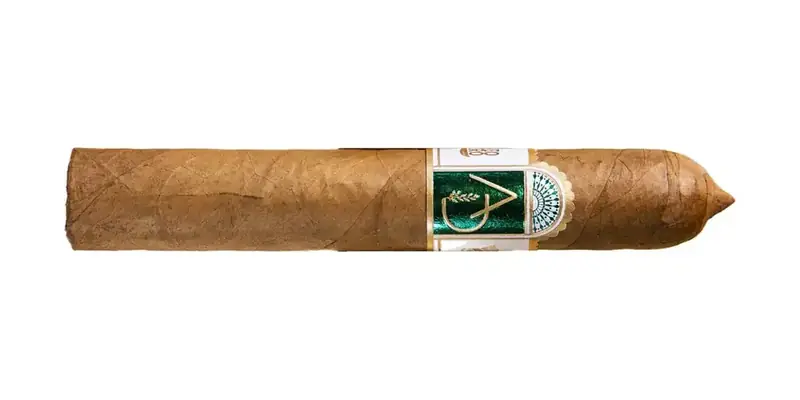

Angel David
De El Club del Turro · Río Grande, Puerto Rico
Capote Viso dominicano; tripa Corojo de Puerto Rico.
- Capa: Connecticut
- Fortaleza: Suave
- Vitolas: Robusto 5" x 50
Fuentes: 1
Ver Angel David en la app, califícalo y guárdalo en Mi Hoja.